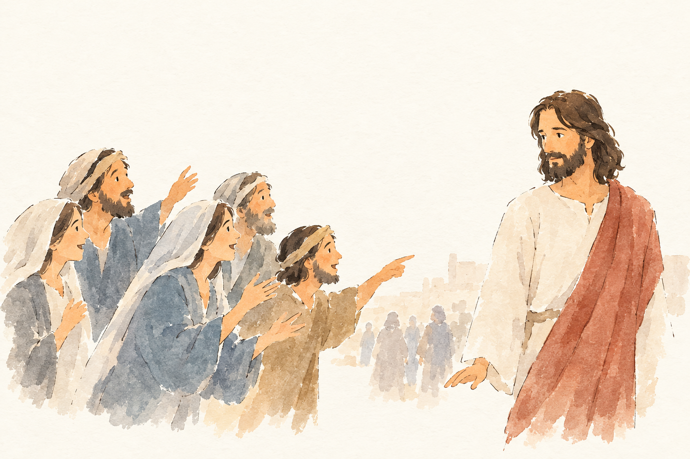
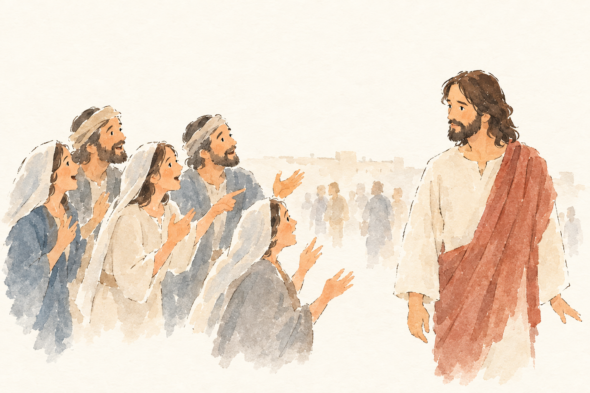
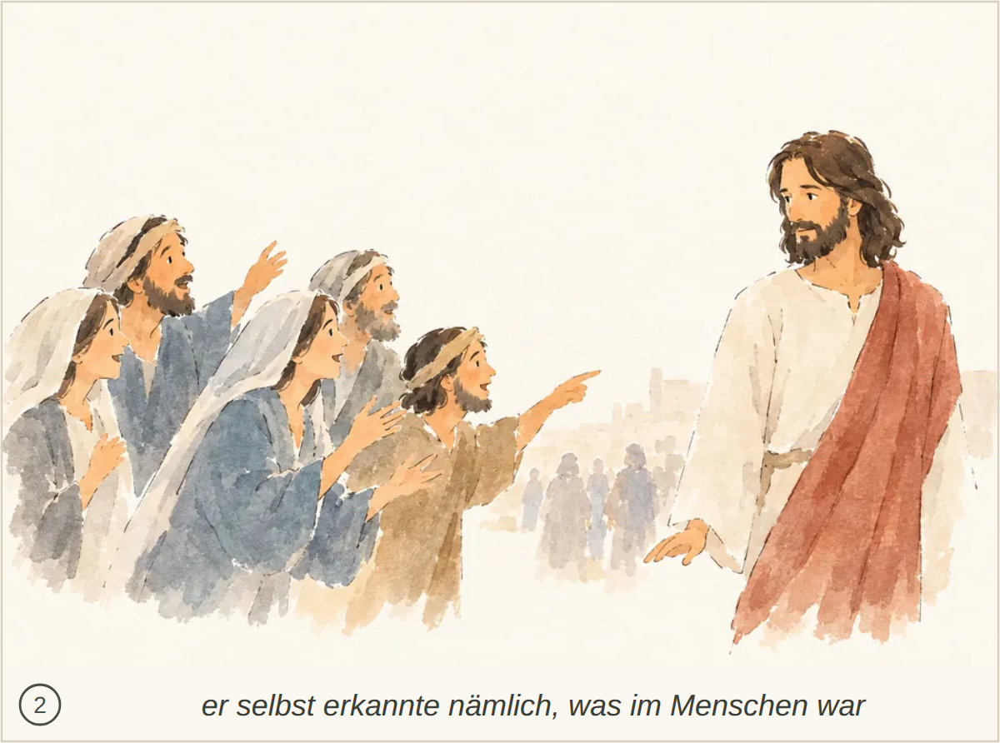

JHN-002-J2__r1v1.png ✔ gewählt: bestanden, 5 Punkte, Kern 1 Der Glaube aufgrund der Zeichen sowie Jesu Zurückhaltung und seine Kenntnis des menschlichen Inneren sind nicht erkennbar.
Blind: A group on the left leans toward the robed man, gesturing and appearing to speak; one man points at him. The robed man looks back toward them, while several small figures stand or walk in the distance. – The robed man appears to represent Jesus approached by a crowd, but the picture does not identify a specific Bible story or moment.

JHN-002-J2__r1v2.png: bestanden, 5 Punkte, Kern 1 Der Glaube aufgrund der Zeichen sowie Jesu Misstrauen und seine Kenntnis des menschlichen Inneren sind nicht erkennbar.
Blind: A group of people call or gesture toward a robed man, who looks back at them. Several faint figures stand farther away near the buildings. – The robed man may represent Jesus, and the group may be appealing to him for help, possibly the ten lepers calling to him for healing. The picture lacks enough distinctive details to identify a particular Bible story or moment confidently.

Kachel: bestanden, Kern 1 Der Glaube aufgrund der Zeichen und Jesu fehlendes Vertrauen in die Menschen sind nicht erkennbar.